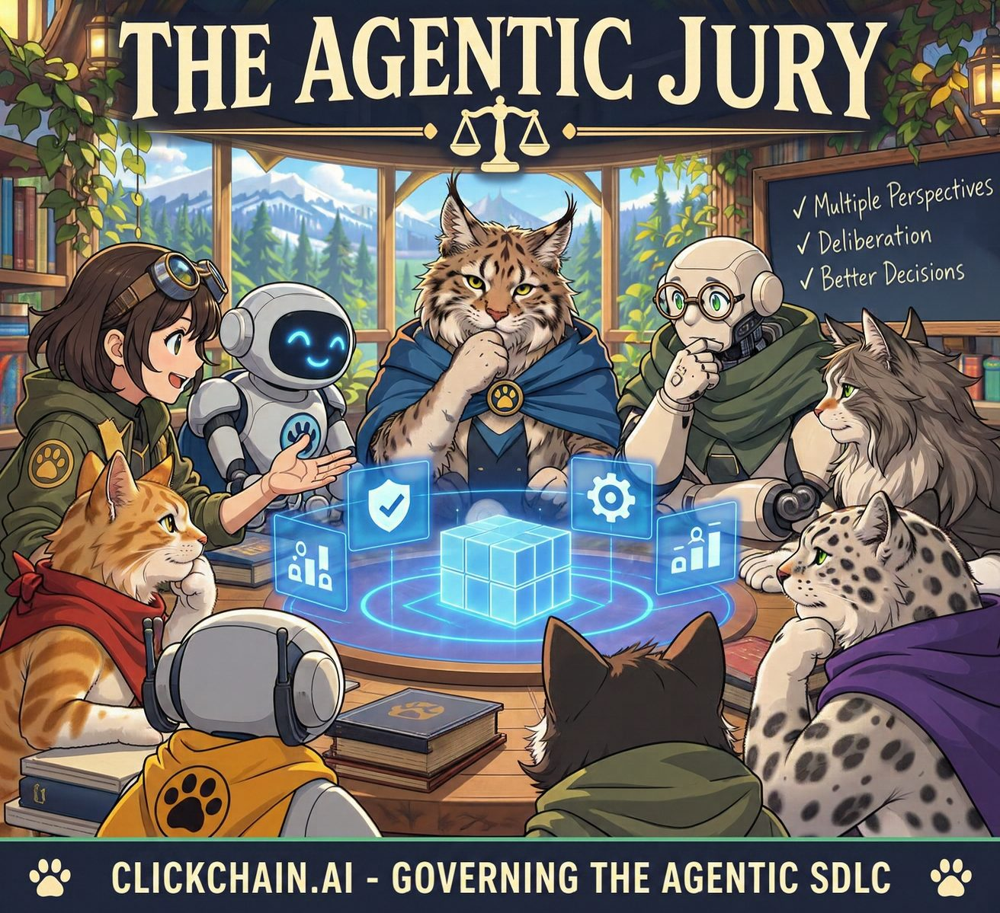

AI Needs Agentic Juries
November 20, 2026

The fact is, AI agents are fast and reckless. No matter how intensely trained the model, it is following one point of view, one narrow probabilistic line of reasoning.
A single human being’s judgement could be critiqued in the same way. Nondeterministic systems - human and AI - benefit from slowing them down, pooling and weaving in self-reflection and dialogue with other points of view.
This is an unqualified good - high-performing teams always make better decisions than high-performing individuals. There is no comparison. If this premise is hard to swallow, then achievements like a true Agentic SDLC will continue to be out of grasp.
The myth of the lone heroic tech-bro - or Genius, or King, or President, or Hero - is just that. A tall tale. There are always more helpers gathered around to gain insight and help a figurehead make hard decisions.
That’s why we have juries - teams of agents who deliberate over a problem, representing as many of the points of view and expertise that we can bring, necessary to tackle that problem.
The conclusions they come to are always better than the rapid, reckless decision making by a single AI agent.
This is yet another reason why we call our platform an “ensemble-first” approach to agentic system design. It’s “ensembles all the way down”.
No one is going to argue with whether AI agents are fast. The question is: can we harvest some of that speed and improve their deliberation? Does software really need to be built in seconds or minutes, or can resilient, safe, high-quality software justify an hour of work instead?
Field notes from my work at ClickChain AI, first posted on LinkedIn. I write the notes by hand; the images are made with AI.